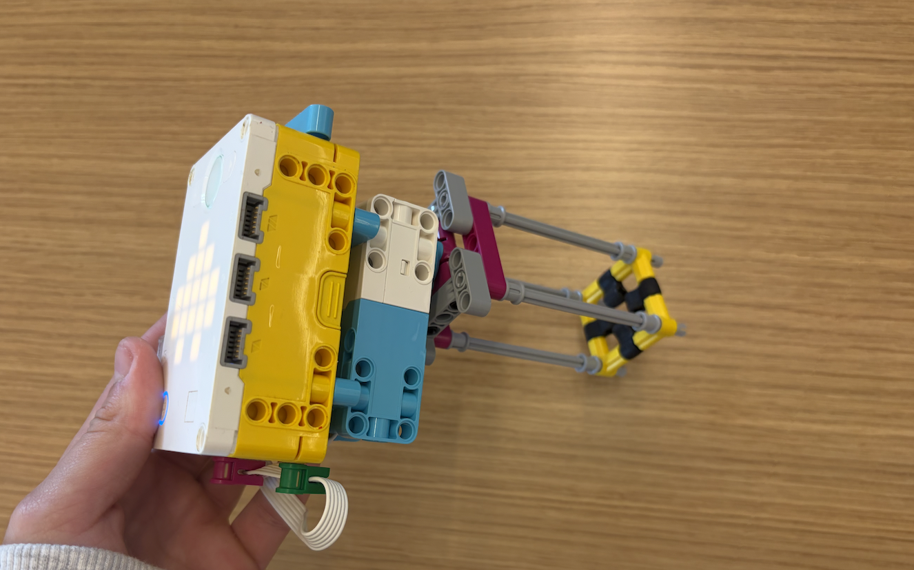
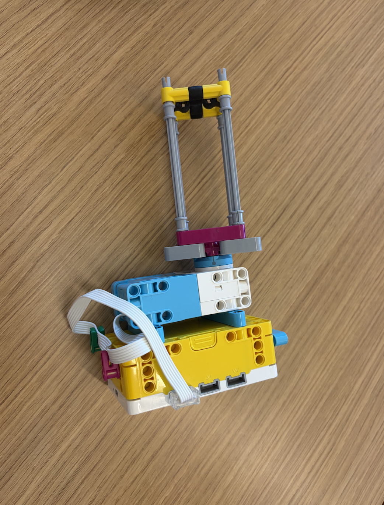
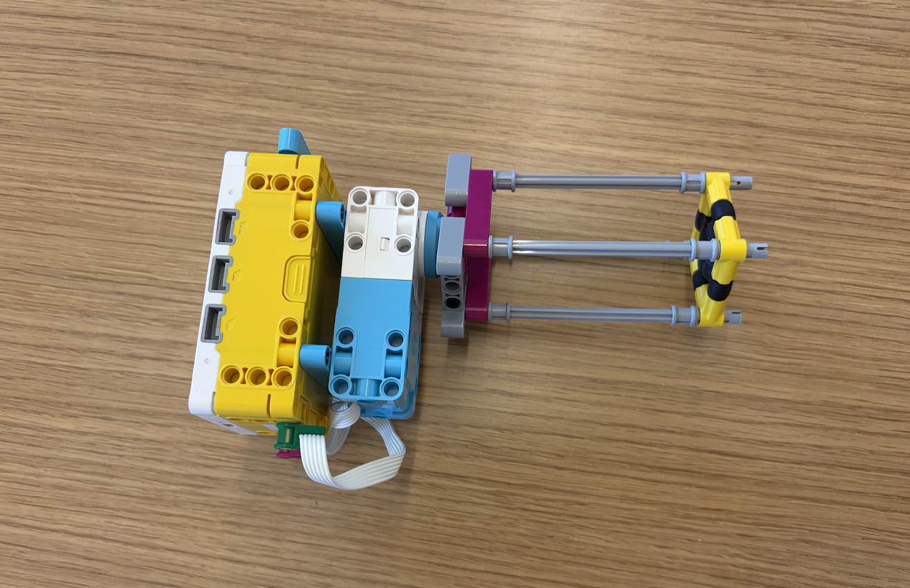

In order to create my design, I worked on making sure that the nut was able to fit snug inside of the square that I made to hold it. I noticed that by using the black rubber pieces, the friction would hold the nut in place and also allowed me to pull the tool over and push it under to grab the nut. For the body of the tool, I worked on making sure that it would fit in the hand of the user, and that the controls were easy to use. I used the two arrow buttons on the hub to control the tool, and it allowed the user to nicely hold the tool in their hand, even with a ski glove on.